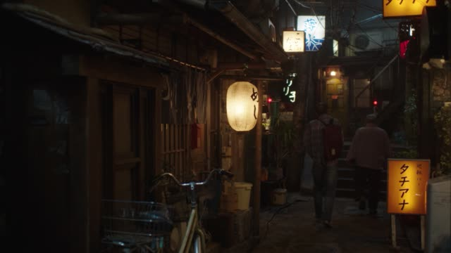
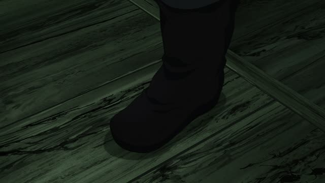

どこ

Shirokuma Cafe · Episode 3
ママ！ 人魚さん どこ？
"Mom! Where's the mermaid?"
どこ means "where". It asks for a place, and it sits right where the place would go in the answer.
On this card, the kid wants to know where the mermaid is, so it's 人魚さん + どこ.
Casual is just どこ？ like here. Polite adds です and か: 人魚さんはどこですか？

Midnight Diner: Tokyo Stories · Season 2, Episode 2
どこ行きます？
"Where shall we go?"
どこ takes particles like any place word, but in speech the へ or に is often dropped. On this card, after dinner: どこ (に) 行きます？ = "where shall we go?", polite with ます.
Quick Examples
At a station, you ask a staff member.
トイレはどこですか？
"Where's the toilet?"
Answer: トイレはあそこです. Same shape, どこ swapped for あそこ.
PoliteYou're at the café, your friend is late. You text them.
今どこ？
"Where are you now?"
Between friends, just どこ. No です, no か.
CasualA friend has a nice new jacket.
どこで買ったの？
"Where did you buy it?"
どこ works like a normal noun, so particles go right after. で = where something happens.
CasualMeeting someone new.
どこに住んでいますか？
"Where do you live?"
に = where someone or something is.
PoliteExamples from Media
Kekkon Dekinai Otoko · Episode 1
どこ行くんですか？
"Where are you going?"

YouTube · video
いや、どこに家作ろうかな。のどかだね。
"Hmm, where should I build my house? It's so peaceful here."
どこに + a verb = where to do it. に marks the spot the house will go.

Vinland Saga · Episode 1
どこに行くの？
"Where are you going?"
どこ + に: to where.
Kotaro Lives Alone · Episode 1
待て どこ行く。
"Wait, where are you going?"

From Up on Poppy Hill
お家はどこ？
"Where's your house?"
お家 ("house", polite) + は + どこ = "where's your house?". X は どこ asks where X is.
1 Litre of Tears · Episode 9
今どこだ？
"Where are you now?"
On the phone.
Dungeon Meshi · Episode 8
どこで?
"Where?"
どこ + で: where (to do it).

Shirokuma Cafe · Episode 4
で、どこに行く？
"So where are we going?"
どこ + に + a verb of going.
Further Reading
A Dictionary of Basic Japanese Grammar
Grammatical Terms, "WH-Word" · p. 14
Appendix 5, Ko-so-a-do · p. 600